Conhecimento
Palestras de alto nível com profissionais que vivem a prática clínica.
 Inscreva-se
+
Inscreva-se
+
RENAISSANCE SYMPOSIUM + CIHOF, EM FLORIPA
Dois dias para viver uma nova experiência entre ciência, estética regenerativa, saúde integrativa, wellness, inovação e cirurgia estética da face.
Será construído pela capacidade de compreender o paciente de maneira mais ampla: seu terreno biológico, sua capacidade regenerativa, sua saúde, seu envelhecimento e a forma como ele vivencia toda a jornada de cuidado.
O Renaissance Symposium + CIHOF, em Floripa, nasce justamente desse encontro.
QUERO VIVER ESSA EXPERIÊNCIAPalestras de alto nível com profissionais que vivem a prática clínica.
Conteúdo científico conectado às novas possibilidades da estética.
Um novo olhar sobre terreno biológico, longevidade e resultados.
Harmonização Orofacial, procedimentos e cirurgias estéticas da face.
Uma visão mais completa sobre saúde, experiência e cuidado.
Profissionais, professores, marcas e novas oportunidades reunidos no mesmo ambiente.
Porque o futuro da estética também passa pela empatia e pela maneira como fazemos nossos pacientes se sentirem.
Palestrante
Do terreno biológico ao high ticket - A nova era da estética regenerativa.
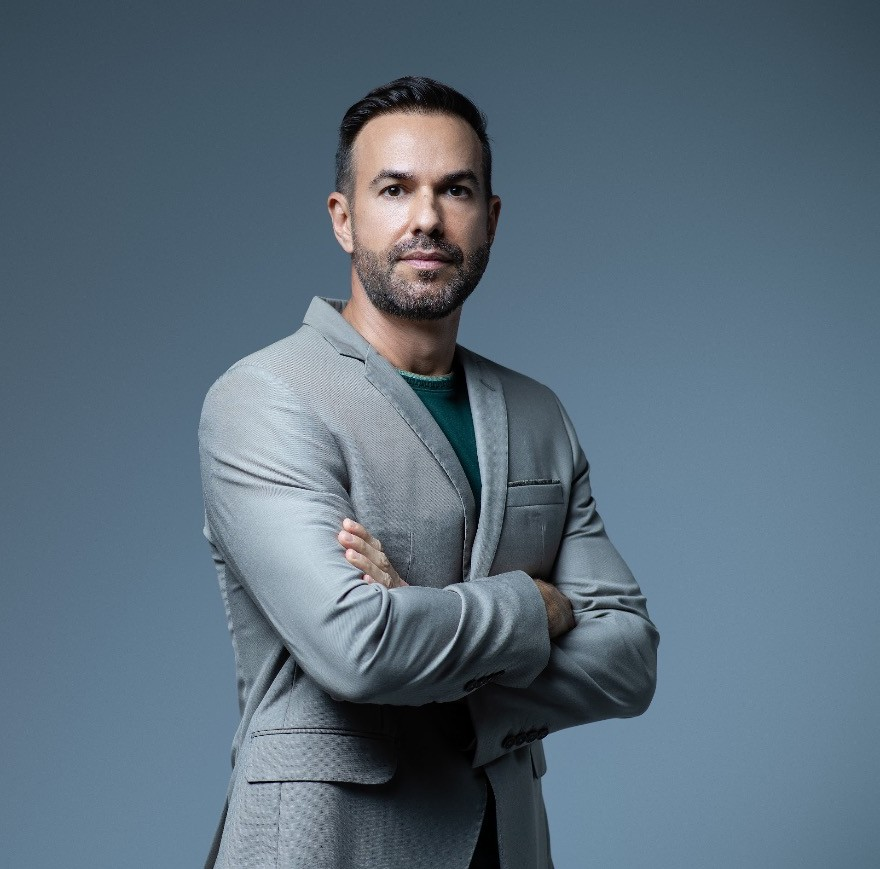
Palestrante
Agregados Plaquetários — O diferencial Premium da sua clínica em 2026
Palestrante
Fios de PDO: Planejamento Estratégico para Resultados Naturais
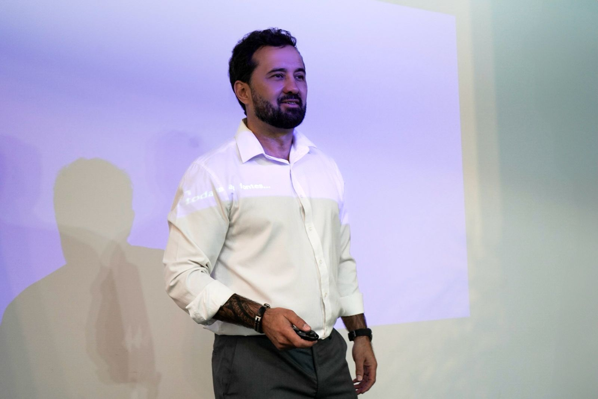
Palestrante
Gestão de clínicas: Incremento de receita com protocolos e CRM
Palestrante
Além do Full Face — Uma abordagem regenerativa do envelhecimento facial
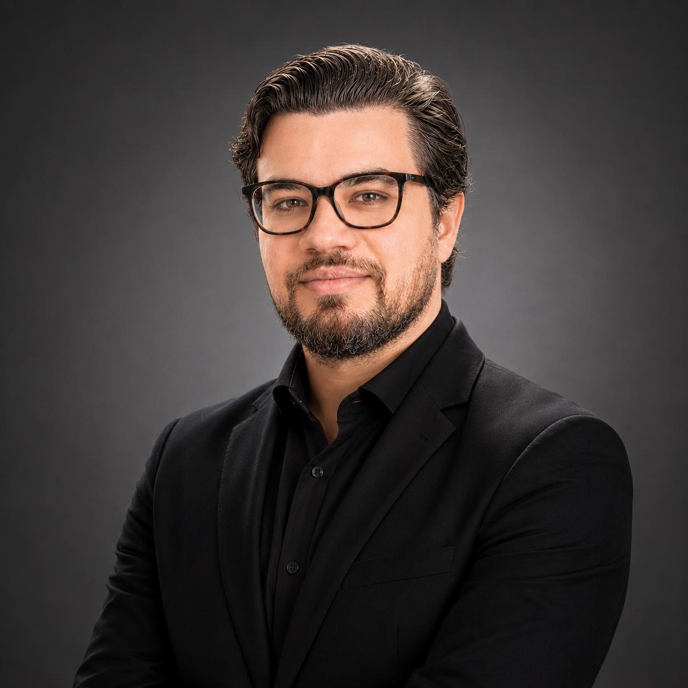
Palestrante
Lifting Facial Além da Estética — Aplicações na Reconstrução de Ferimentos Complexos da Face
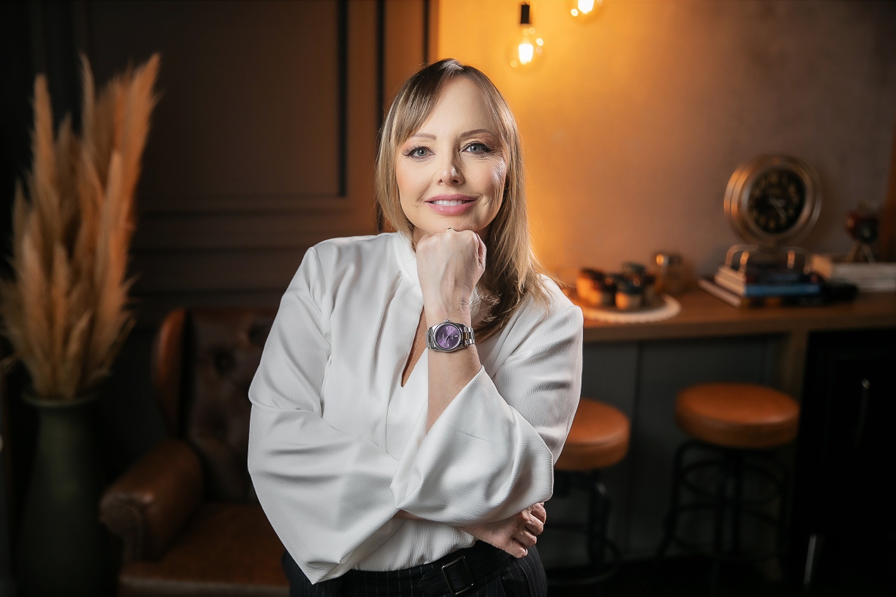
Palestrante
Fios de PDO Montados: A Tríade da Transformação — Preenchimento, Bioestimulação e Miomodulação
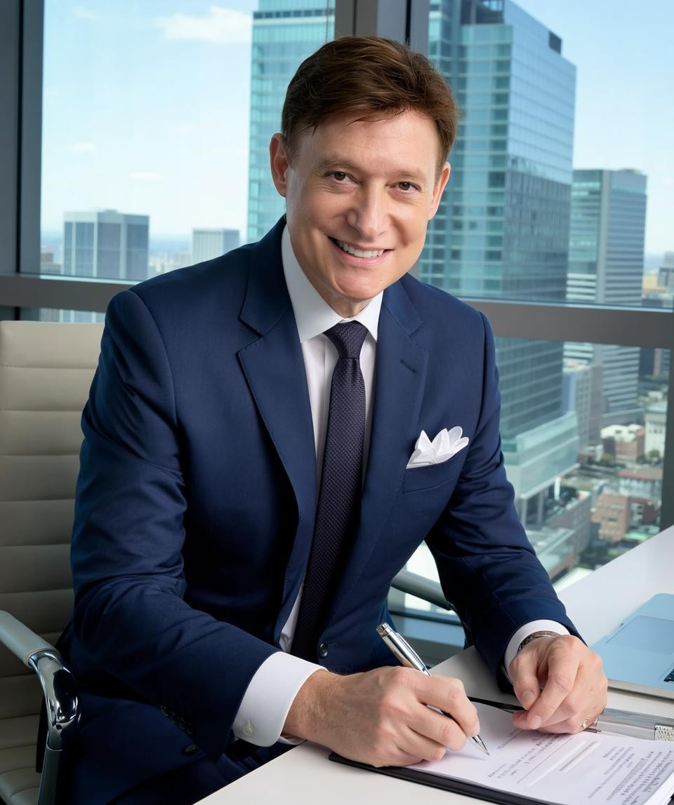
Palestrante
Golden Full Face: Planejamento Estrutural para Harmonização e Rejuvenescimento Facial em Pacientes Classe II – Divisão 1
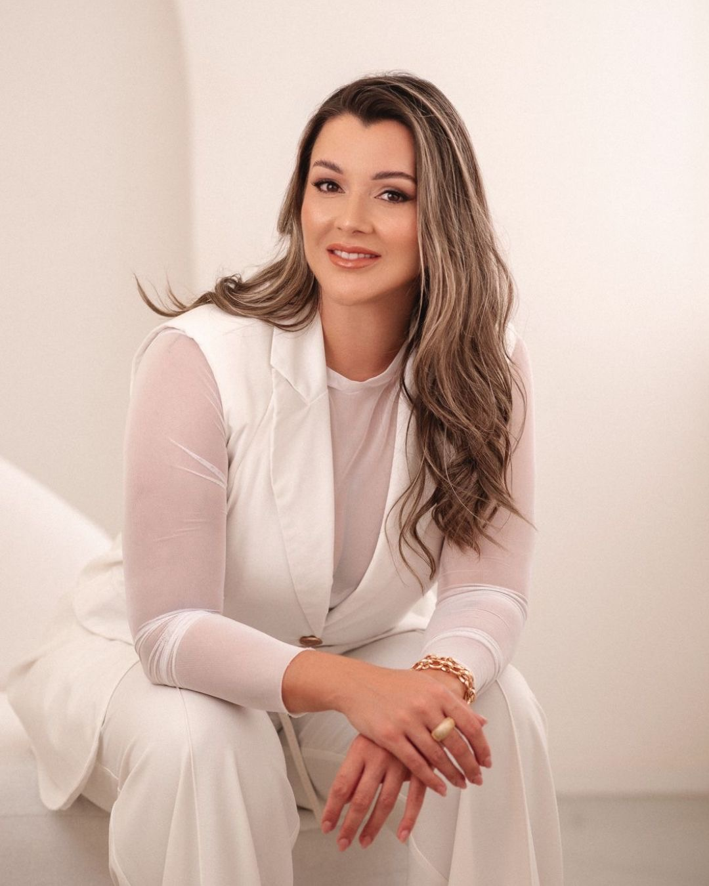
Palestrante
DO SINAL A CAUSA - Acometimentos da pele e os pilares da abordagem integrativa
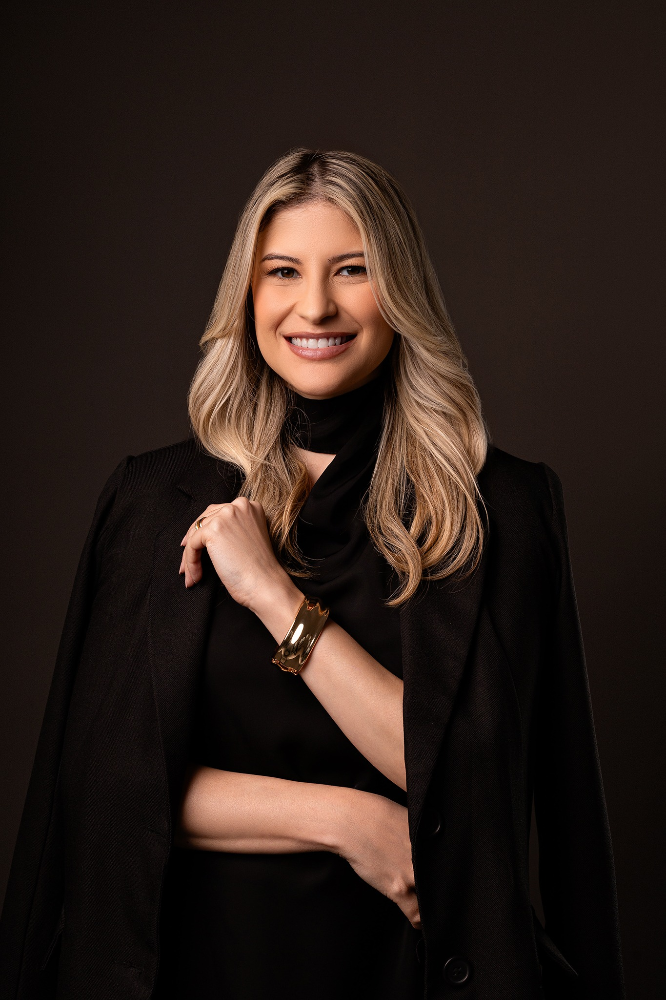
Palestrante
Hof Advanced and Surgery

Palestrante
Os 4 pilares do sucesso

Palestrante
LONGEVITY-Lifting além do tempo

Palestrante
Estratégia Regenerativa Multimodal na Fibrose Persistente Pós-Endolaser
O Renaissance Symposium + CIHOF, em Floripa, também levará ao público uma visão prática das cirurgias estéticas da face.
Aproximando planejamento, técnica, segurança, regeneração e resultado.
Conhecimento aproxima. Experiências conectam. E algumas conexões podem mudar completamente a direção de uma carreira.
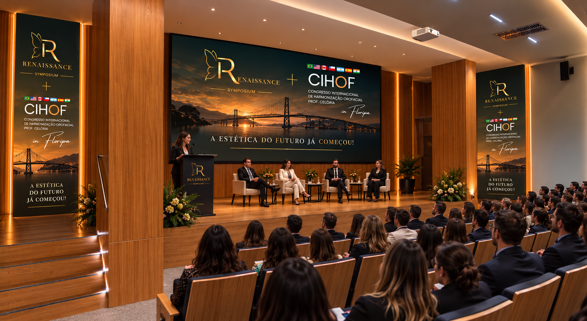
AUDITÓRIO + PALCO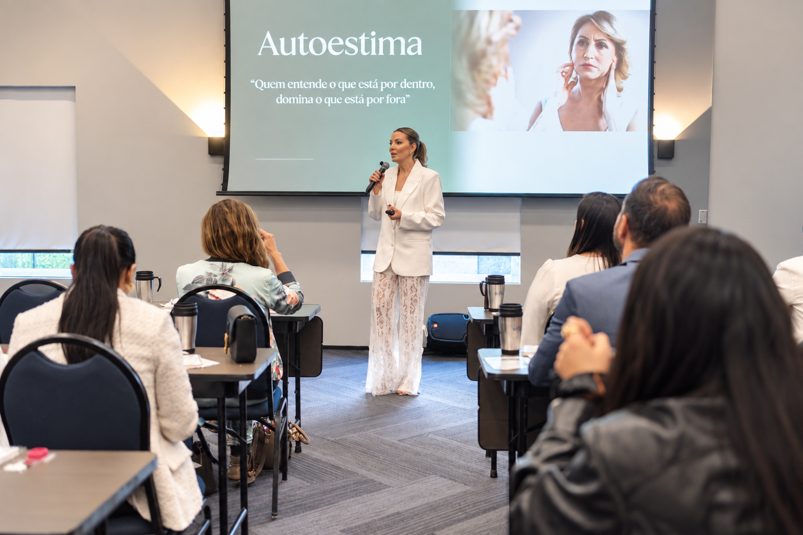
NETWORKING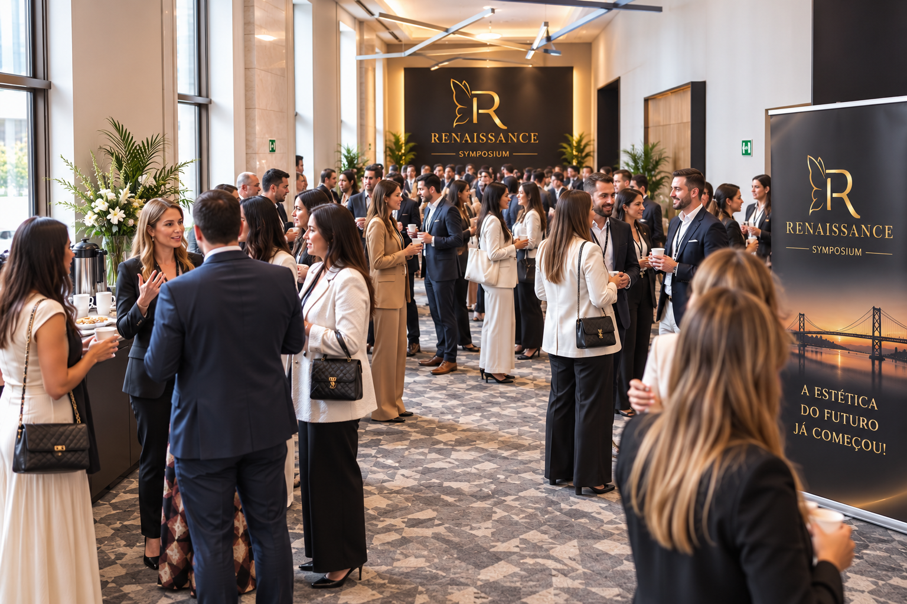
CONEXÕES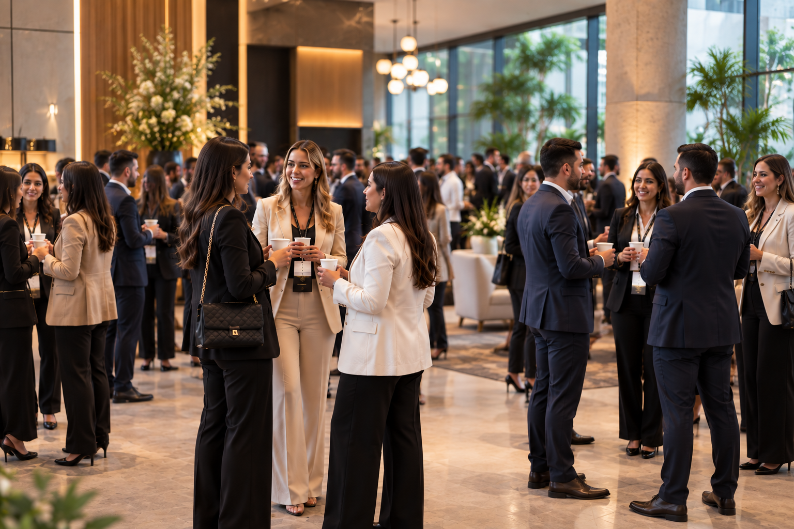
EXPERIÊNCIAExperiências e percepções que falam de conhecimento, conexão e transformação.
Foi uma experiência transformadora!
Saí com muito mais conhecimento, inspiração e uma nova visão sobre a estética regenerativa.
MÉDICAAlém do alto nível científico, o evento me proporcionou conexões valiosas.
Conheci profissionais incríveis e troquei experiências que já estão fazendo diferença na minha prática clínica.
CIRURGIÃ-DENTISTAO evento me trouxe uma nova visão profissional.
Pude ver a estética de forma mais ampla, integrada e humana. Saí com a certeza de que é possível unir ciência, beleza e propósito.
BIOMÉDICA ESTETAMe senti verdadeiramente acolhida.
O ambiente, a organização e as pessoas fazem toda a diferença. Foi uma experiência enriquecedora em todos os sentidos.
ESTETICISTAConteúdo de excelência e experiências que ampliam horizontes.
Voltei para casa com novas ideias, mais segurança e muitos planos para o futuro.
NUTRICIONISTAO Renaissance Symposium + CIHOF, em Floripa reúne profissionais que acreditam que o futuro da estética será mais científico, regenerativo, integrativo e humano.
Um movimento para quem quer acompanhar as transformações da profissão — e fazer parte delas.
Dois dias para aprender, compartilhar, descobrir e fazer parte de algo maior.
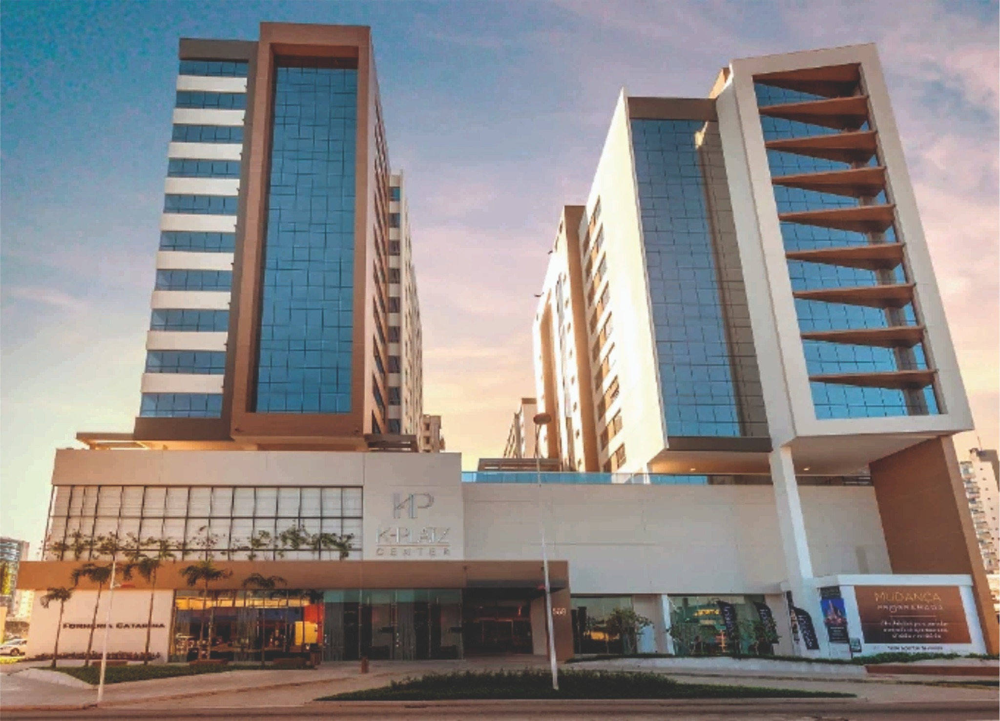
Av. Presidente Kennedy, 568 — Campinas, São José — SC, 88101-001
COMO CHEGAR →Use o botão de inscrição desta página ou selecione o lote disponível.
Informação sobre o que está incluso em confirmação pela organização.
Informação sobre certificado em confirmação pela organização.
K-Platz Center — Av. Presidente Kennedy, 568 — Campinas, São José – SC, 88101-001.
Informação sobre transferência em confirmação pela organização.
30 e 31 de outubro de 2026 · Florianópolis – SC
GARANTA SUA VAGA ↓